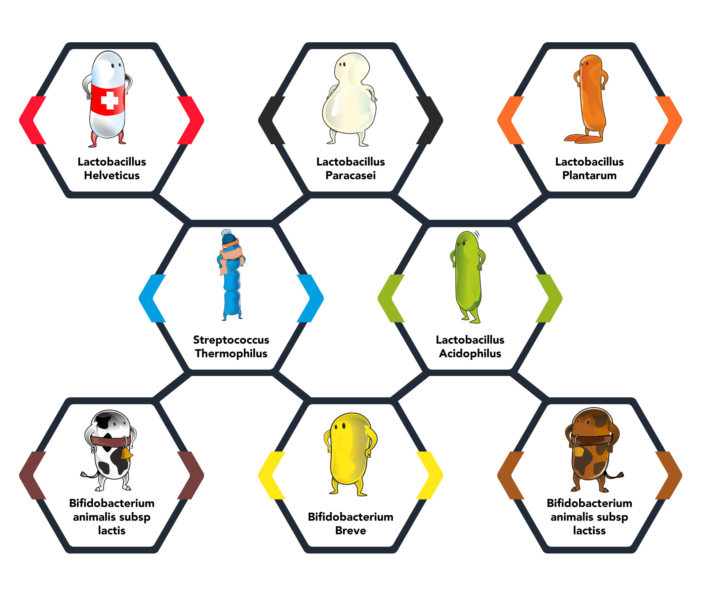

The De Simone Formulation unique and certified by the Investor
The DeSimone Formulation unique and certified by the Investor
Science Speaks For Itself
the De Simone Formulation contained in CDS22-formula is th only probiotic formulationrecomended and recongize by y name in the American College of Gastroentrology AGA guidelinwsfor the management of pouchitis and other pouch-related disorder (Olleik etal.,Gastroentrology, Vol164,No.6,2023).
the European Chorn'sand Colits Organization(ECCO) has included the DESimone Formulation in its guidelines fo the management of inflammentory Bowel Diseases (IBD) (ECCO,ECCO News,2023). CDS22-formulais highlry effective in the dietery management of various gastrointestinal conditions. The extnsive scientific evidence,comprising over 200 peer-reviewedarticles and more than80 controlled clinical studies,ensures that the benefit observed in clincal trials are replicable in everyday use

Why Does It Works?
Not all probiotics are the same. The overall biological action of a probiotic is notsimply the sum of its individual components actions but the result of a complex network of relationships between the microorganisms it contains and the human host. Unlike many other products on the market, the clinical results obtained
from CDS22-formula speak louder than any technical description.
CDS22-formula combines 8 bacterial strains selected for their biochemical and enzymatic profile and specifically combined in precise proportions that allow them to act synergistically on the physiology of the human gastrointestinal system.It is essential to highlight that the production of De Simone Formulation is in the field of biology and not chemistry, since the bacteria that form the basis of the product are living organisms.Their cultivation requires advanced scientific knowledge and specific know-how, which is still protected by trade secrets.CDS22-formula combines 8 bacterial strains selected for their biochemical and
enzymatic profiles and specifically calibrated in precise proportions to synergistically act on the physiology of the human gastrointestinal tract.
It is crucial to emphasize that the production of the Formulazione De Simone falls within the field of biology, not chemistry, as the bacteria forming the product sbase are living organisms. Their cultivation requires advanced scientific knowledge and specific know-how, still protected by industrial secrecy.
Benefits
CDS22-formula supports the dietary managementof intestinal dysbiosis contributing to well-being in caseof intestnal disoders connected to irriable bowel syndrome, ulcerative colitis,and paucities
Control of intestinal dysbriosis :
Intestinal dysbiosis is a condition where the natural balance of microorganisms in the intestine is altered, causing various gastrointestinal disorders. Controlling dysbiosis is crucial for maintaining digestive health, improving patient comfort, and contributing to overall well-being, even in cases of chronic intestinal disorders like irritable bowel syndrome, ulcerative colitis, and pouchitis.
Immediate and prolonged restoration of intestinal flora:
CDS22-formula is ideal for both acute and chronic episodes of intestinal dysbiosis. It reduces the severity and duration of symptoms, improving patient comfort and accelerating recovery. It is particularly indicated for supporting intestinal health and can be beneficial incases of temporary or chronic intestinal disorders characterized by accelerated transit that prevents normal daily activities or adequate night rest.
Variety of Dosages:
Available in different formats and dosages to support intestinal health and adapt to individual dietary needs, offering flexibility to healthcare professionals in personalizing supplementation.
Original Formulation:
CDS22-formula is the original FormulazionDe Simone, a unique combination of proprietary bacterial strains designed to maximizeintestinal well-being. The strains are cultivated and maintained in proprietary Master Cell Banks, ensuring purity, quality, and consistency in every production.
Guaranteed Safety:
Every dose has been tested to ensure maximum efficacy and safety. Thanks to a short supply chain approved by the inventor, the product maintains the highest quality standards from raw material to packaging.
Affordability:
Current regulations often do not require thorough comparative studies to ensure that changes in manufacturing processes do not compromise the efficacy and safety of the commercially distributed probiotic product.
De Simone Formulation
The De Simone Formulation contained in CDS22-formula is the only probiotic formulation recommended and recognized by name in the American College of Gastroenterology AGA guidelines for the management of pouchitis and other pouch related disorders (Olleik et al., Gastroenterology, Vol. 164, No. 6, 2023).
His interest in the intestinal microbiota dates back to the 1980s when the importance of the intestinal flora s role was just beginning to be understood. Professor De Simone is an honorary member of the American College of Gastroenterology and, after graduating in Medicine and Surgery, specialized in gastroenterology, allergology, and clinical immunology. He taught Infectious Diseases at the University of L’Aquila (Italy).
He has published over 200 clinical studies, scientific articles, and book chapters.
Since the commercial launch of his renowned De Simone Formulation in the 1990s, the Professor has actively advocated for better regulation and qualitycontrol of probiotics, highlighting the potential health and well-being risks.
As emphasized by Professor De Simone in numerous conferences and publications, many marketed probiotics have not been clinically tested or may not correspond to the original clinically tested formulations when marketed, causing substantial differences in the safety and efficacy of the final product (De Simone C. Clinical Gastroenterology and Hepatology Vol. 16 No. 9 2018).
Current regulations often do not require thorough comparative studies to ensure that changes in manufacturing processes do not compromise the efficacy and safety of the commercially distributed probiotic product.
There is ONE De SimoneFormulation
The lack of strict regulation and the possibility for manufacturers to modify formulations without adequately informing consumers pose a threat to public trust.
In the past, the De Simone Formulation (DSF) was sold under the brand name VSL#3®*, by VSL Pharmaceuticals and Actial Srl.
In 2019, VSL#3® distributors were found guilty of false advertising (for more information:Federal Judge Upholds $18M Verdict, Blocks False Advertising of
VSL#3, Schulman Bhattacharya). Recently, the European Crohn s and Colitis Organisation (ECCO) has updated its guidelines to clarify that pre-2016 literature references to VSL#3® exclusively refer to DSF (ECCO, ECCO News, 2023). In 2024, ESPEN (European Society for Clinical Nutrition and Metabolism) published
the article “Clarifying Correct Attributions in Scientific Literature: The Case of the De Simone Formulation and VSL#3®“, which reiterates the abov
The De Simone Formulation is sold under the brand name “Visbiome in the USA and Canada (Exegi) and under the brand name De Simone Formulation in Korea (HectoHealthcare).
Soon to be available in the EU under the brand CDS22-formula.
*is a registered trademark of VSL Pharmaceuticals and Actial Srl Inc, independent companies from EOS2021 S.r.l.
Products packaging
CDS22-formula, is available in sachets and capsules to meet specific tastes and needs. Each format of CDS22-formula is gluten-free and vegetarian.
CDS22 Formula Billion
Potency: 450 billion live bacteria per sachet
CDS22 Formula 450 Billion
Potency: 650 billion live bacteria per sachet
CDS22 Formula 900 Billion
Potency: 900 billion live bacteria per sachet
CDS22 Formula 112 Billion
Potency: 112 billion live bacteria per capsule
FAQ
What does CDS22-formula contain?
Answer to question 1
Where can I find CDS22-formula?
Answer to question 2
Why should I take CDS22-formula?
Answer to question 3
How do I take CDS22-formula?
Answer to question 4
Does CDS22-formula contain allergens?
Answer to question 5
Why must CDS22-formula be stored in the refrigerator?
Answer to question 6
Can CDS22-formula have side effects?
Answer to question 7
Can CDS22-formula be taken during antibiotic therapy?